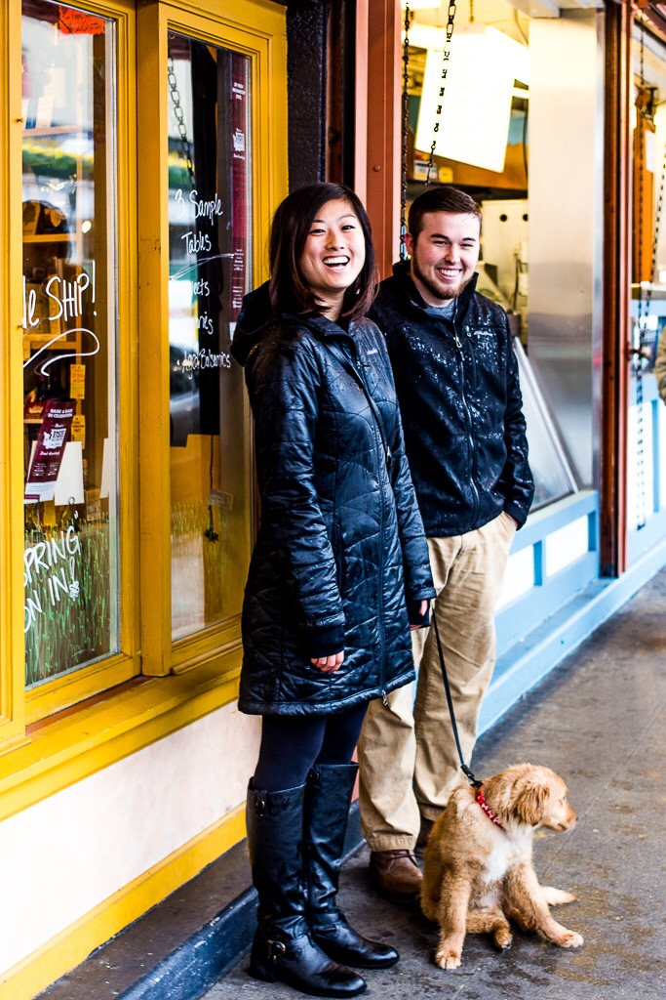

Zachary Zaerr
For Washington State Representative
43rd Legislative District

Meet Zachary
As a State Representative, Zachary Zaerr would aspire to make government more efficient for the taxpayer and pass legislation to create a Washington that maximizes freedom of opportunity for all who reside within our borders.
Born in Cincinnati, Ohio, Zachary attended college at The Ohio State University, where he studied political science and business. He learned from his family members – soldiers, entrepreneurs, farmers, and service workers alike – the value of respecting those around you and working hard. Zachary has worked as a donut packer at a bakery, as a legislative assistant for a small business association, and now works for The Boeing Company after completing two successful internships with the company.
Zachary’s wife Jenny was born in China but immigrated to the United States with her parents as a small child. They were high school sweethearts and married between their sophomore and junior years of college. They have a beautiful puppy named Riley and can often be found at local dog-friendly bars and restaurants with their pup.
While not natives of Seattle, Zachary and his wife quickly fell in love with the city and the surrounding areas during the past few years. Zachary has a passion for solving the issues confronting the 43rd Legislative District, which he identifies as such: transportation, wages and affordability, personal liberty, and the out-of-control homeless situation in Seattle.
Zachary would always put the citizens of Washington and the constituents of the 43rd Legislative District above political party or special interest group. Zachary is an outspoken opponent of Donald Trump and the divisiveness that hate speech like his causes.